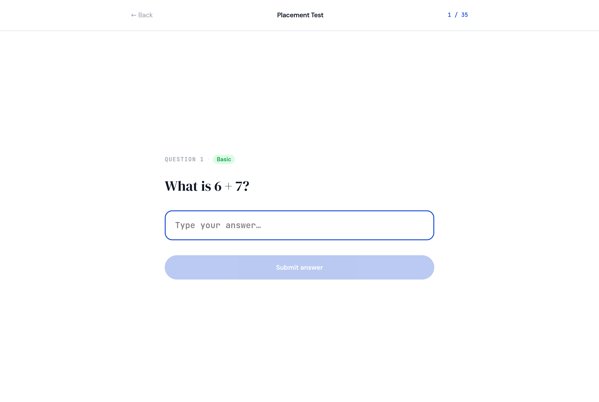
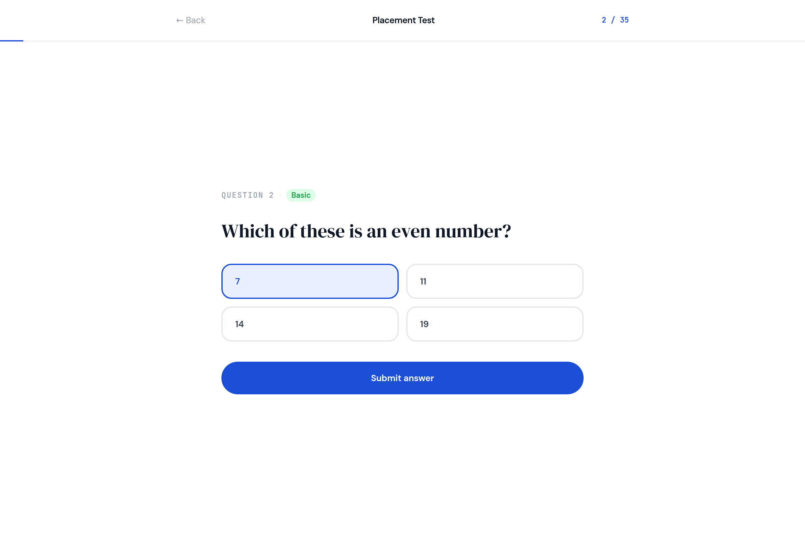
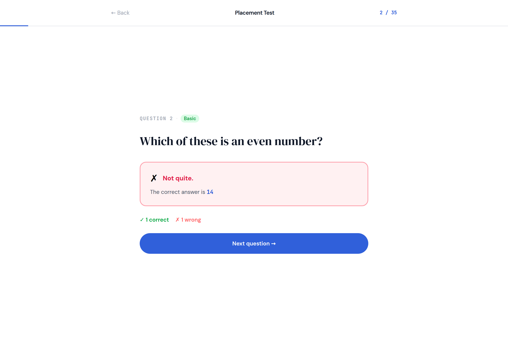
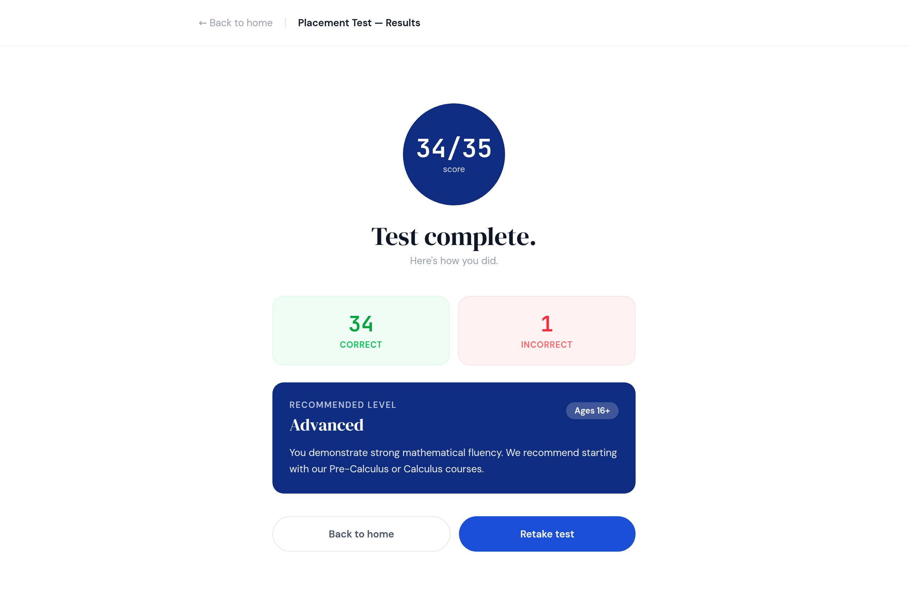

3. Placement test, and its results
No em dashes anywhere in this document or any copy it generates.

Two forms: Placement, which asks 35 questions one at a time, and PlacementResults, which is the screen at the end. The design does them as one component with two modes; in Anvil they are two forms, because one frame is one screen and that is the rule on your design brief.
Everything in the middle of the page sits in a ColumnPanel called card_body with the optional role narrow, which holds it at 640 wide in the centre. If you skip that role the same components go edge to edge, which is how the phone picture looks anyway.
Placement: the nav
One row, three things across.
| Name | Type | Text | Look |
|---|---|---|---|
lnk_back | Link | ← Back | foreground #9ca3af, 14, align left |
lbl_title | Label | Placement Test | bold, 14, align center |
lbl_progress | Label | 2 / 35 | role mono, foreground Primary, 12, align right |
Under it the design has a two pixel bar that fills from left to right as you go. There is no bar component. lbl_progress says the same thing in numbers, and that is what you build.
Placement: the question
| Name | Type | Text | Look |
|---|---|---|---|
fp_badge | FlowPanel | one line, two small things | |
lbl_question_number | Label, inside | QUESTION 2 | role eyebrow and mono, foreground #9ca3af |
lbl_difficulty | Label, inside | Basic | role chip. Its colours change with the difficulty, below. |
lbl_question | Label | Which of these is an even number? | role display, foreground On Surface, 30 |
txt_answer | TextBox | placeholder Type your answer… | role answer (optional), role mono, 18 |
dd_choice | DropDown | role answer (optional), 16 | |
btn_submit | Button | Submit answer | role pill, background Primary, foreground On Primary, full width |
Only one of txt_answer and dd_choice is visible at a time. A written question shows the box; a multiple choice question shows the dropdown. That is Pattern 14, and it is the one thing on this screen that changes shape:
if question['choices']:
self.dd_choice.items = question['choices'].split("|")
self.dd_choice.selected_value = None
self.dd_choice.visible = True
self.txt_answer.visible = False
else:
self.txt_answer.text = ""
self.txt_answer.visible = True
self.dd_choice.visible = FalseThe design shows the four choices as a two by two grid of boxes and turns the chosen one blue. Four side by side buttons that each remember whether they are picked is a lot of code for a look. A DropDown does the same job in one component, and your story only asks that students can select from multiple choices.

The difficulty chip
Five difficulties, five colour pairs, taken straight from the design:
DIFFICULTY = {
1: ("Basic", "#dcfce7", "#16a34a"),
2: ("Pre-Algebra", "#dcfce7", "#16a34a"),
3: ("Algebra", "#fef9c3", "#ca8a04"),
4: ("Advanced", "#ffedd5", "#ea580c"),
5: ("Expert", "#fee2e2", "#dc2626"),
}
name, back, fore = DIFFICULTY[int(question['difficulty'])]
self.lbl_difficulty.text = name
self.lbl_difficulty.background = back
self.lbl_difficulty.foreground = foreint(...) is not optional. A Number column gives you 2.0, and a dictionary has no key 2.0, so without it you get KeyError: 2.0 on the first question and it looks like the table is wrong. The table is fine. It is the decimal point.
Placement: after you answer

The box and the submit button go away and three things appear in their place.
| Name | Type | Text | Look |
|---|---|---|---|
card_feedback | ColumnPanel | role correct or wrong, set from code | |
lbl_feedback_title | Label, inside | ✓ Correct! or ✗ Not quite. | bold, 16, foreground green or red |
lbl_feedback_answer | Label, inside | The correct answer is 14 | foreground #4b5563, 14. Only shown on a wrong answer. |
lbl_score | Label | ✓ 1 correct ✗ 1 wrong | bold, 14. Two colours in one label is not a thing; use #374151, or make it two labels in a FlowPanel. |
btn_next | Button | Next question →, or See results on the last one | role pill, background Primary, foreground On Primary, full width |
All of that is one method, and both screens with a question on them use it, so it is worth writing well once:
def show_feedback(self, was_right, answer):
if was_right:
self.card_feedback.role = "correct"
self.lbl_feedback_title.text = "✓ Correct!"
self.lbl_feedback_title.foreground = "#16a34a"
self.lbl_feedback_answer.visible = False
else:
self.card_feedback.role = "wrong"
self.lbl_feedback_title.text = "✗ Not quite."
self.lbl_feedback_title.foreground = "#e11d48"
self.lbl_feedback_answer.text = f"The correct answer is {answer}"
self.lbl_feedback_answer.visible = True
self.card_feedback.visible = True
self.lbl_score.text = f"✓ {self.correct} correct ✗ {self.wrong} wrong"
self.txt_answer.visible = False
self.dd_choice.visible = False
self.btn_submit.visible = False
self.btn_next.visible = TrueAnd the reverse, when the next question arrives: hide card_feedback, lbl_score and btn_next, show btn_submit, and show whichever of the box or the dropdown the question needs. Start the form with card_feedback, lbl_score and btn_next invisible, in the designer, so the first question opens clean.
PlacementResults

A separate form. It is opened with the score in its hands, which is the open_form('PlacementResults', correct=34, total=35) idea from your Pattern Book, and it catches them in __init__(self, correct=0, total=0, **properties).
| Name | Type | Text | Look |
|---|---|---|---|
lnk_back | Link | ← Back to home | foreground #9ca3af, 14 |
lbl_title | Label | Placement Test: Results | bold, 14 |
lbl_score_ring | Label | 34/35 | role mono, bold, 36, foreground On Primary, align center. With the optional score-ring role it becomes the blue circle; without it, put it in a small card_score ColumnPanel of role panel with the level's colour. |
lbl_done | Label | Test complete. | role display, 40, align center |
lbl_done_sub | Label | Here's how you did. | foreground #9ca3af, 14, align center |
fp_stats | FlowPanel | two boxes side by side | |
card_correct | ColumnPanel, inside | role correct | |
lbl_correct_count | Label, inside that | 34 | role mono, bold, 30, foreground #16a34a, align center |
lbl_correct_word | Label, inside that | CORRECT | role eyebrow, foreground #22c55e, align center |
card_wrong | ColumnPanel, inside fp_stats | role wrong | |
lbl_wrong_count | Label, inside that | 1 | role mono, bold, 30, foreground #ef4444, align center |
lbl_wrong_word | Label, inside that | INCORRECT | role eyebrow, foreground #f87171, align center |
card_level | ColumnPanel | role panel. Background set from code, below. | |
lbl_recommended | Label, inside | RECOMMENDED LEVEL | role eyebrow, foreground On Primary |
lbl_level | Label, inside | Advanced | role display, 24, foreground On Primary |
lbl_ages | Label, inside | Ages 16+ | role chip, background rgba(255,255,255,0.2), foreground On Primary |
lbl_level_text | Label, inside | the sentence for that level, below | foreground On Primary, 14 |
fp_buttons | FlowPanel | ||
btn_home | Button, inside | Back to home | role pill-outline, foreground #4b5563 |
btn_retake | Button, inside | Retake test | role pill, background Primary, foreground On Primary |
The four levels
Exactly as the design decides them, by the fraction you got right. Highest first, so the first line that matches wins:
LEVELS = [
(0.85, "Advanced", "Ages 16+", "#0f2d80",
"You demonstrate strong mathematical fluency. We recommend starting with our Pre-Calculus or Calculus courses."),
(0.60, "High School", "Ages 13 to 16", "#1a4fd6",
"You have solid fundamentals. Algebra II and Geometry courses are your ideal next step."),
(0.35, "Middle School", "Ages 10 to 13", "#3b6ef5",
"You're building good number sense. We recommend starting with Pre-Algebra and Fractions."),
(0.00, "Elementary", "Ages 6 to 10", "#6b8ff7",
"You're just getting started, great! Begin with our foundational arithmetic and number basics courses."),
]
share = correct / total if total else 0
for cutoff, name, ages, colour, sentence in LEVELS:
if share >= cutoff:
break
self.lbl_score_ring.text = f"{correct}/{total}"
self.lbl_correct_count.text = str(correct)
self.lbl_wrong_count.text = str(total - correct)
self.card_level.background = colour
self.lbl_level.text = name
self.lbl_ages.text = ages
self.lbl_level_text.text = sentencestr(correct) rather than the bare number, because .text wants text.
This is the screen the README asks you to decide about. If the level is supposed to be secret, self.card_level.visible = False and the screen still works; the score ring and the two boxes say everything else.
The three states
Empty. Opening PlacementResults with nothing, which Anvil will do if it is ever your startup form, gives 0/0 and the Elementary card. The if total else 0 is what stops that being a crash.
Wrong. Pressing submit with the box empty or nothing chosen. The design greys the button out until you have typed. In Anvil, check in the handler:
if not given:
alert("Type an answer, or pick one, first.")
returnFull. Question 35 is Using integration by parts, ∫ x·eˣ dx = ? with four long choices. Check the dropdown fits them. Some of your written answers are x³ + C and eˣ, which nobody can type on a keyboard; page 7 has what to do about that.
Test it
- Question 1 shows the box, not the dropdown. Question 2 shows the dropdown.
- Submit with nothing. You are told, and nothing else changes.
- Get one right and one wrong. Green box, then red box with the answer in it. The running score under it matches.
- The chip is green on question 1 and red by question 26.
- Get through to the end.
See resultson the last one, notNext question. - The results screen shows your real score, the two boxes match it, and the level card is the colour of the level.
- Retake test puts you back on question 1 with everything cleared.
The rest of this guide
- Math Bros Inc.: making Anvil look like the Figma
- 1. Colours, fonts and roles: set once
- 2. Home
- 3. Placement test, and its results (you are here)
- 4. Practice and the subject quiz
- 5. Leaderboard
- 6. theme.css, in one place
- 7. What not to chase